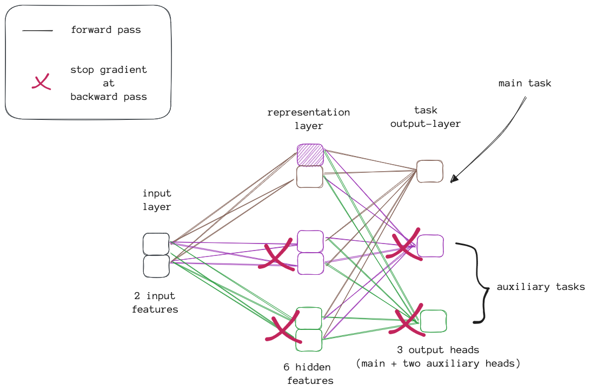
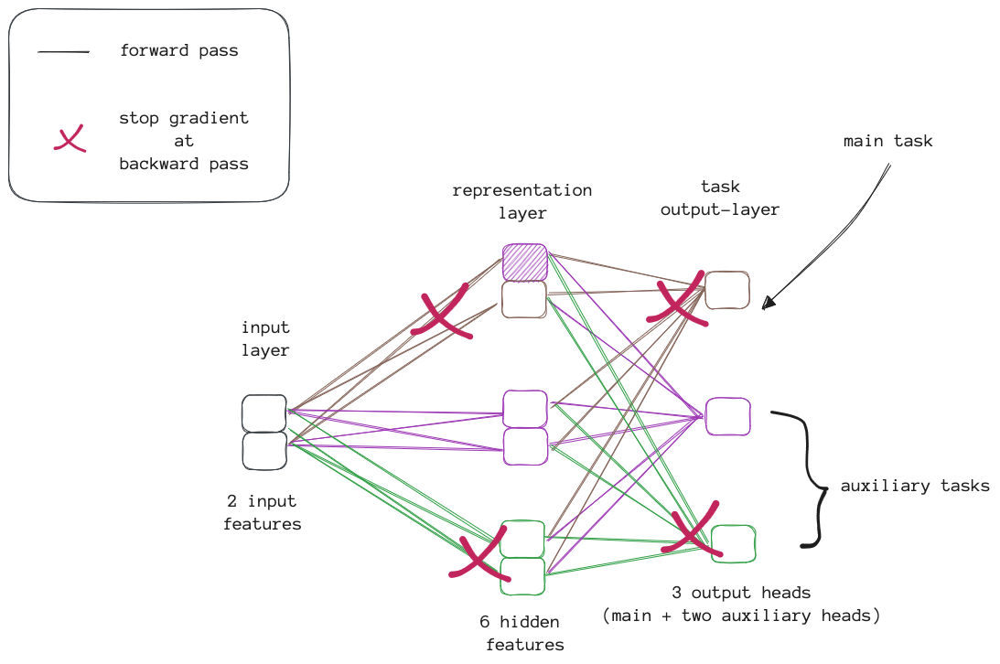

<!doctype html>
<html lang="en"><head>
    <title>Auxiliary task discovery through generate-and-test</title>
    
    <!DOCTYPE html>
<html lang="en">
<head>
    <meta charset="UTF-8">
    <link rel="stylesheet" href="https://cdn.jsdelivr.net/npm/katex@0.16.4/dist/katex.min.css" integrity="sha384-vKruj+a13U8yHIkAyGgK1J3ArTLzrFGBbBc0tDp4ad/EyewESeXE/Iv67Aj8gKZ0" crossorigin="anonymous">

    
    <script defer src="https://cdn.jsdelivr.net/npm/katex@0.16.4/dist/katex.min.js" integrity="sha384-PwRUT/YqbnEjkZO0zZxNqcxACrXe+j766U2amXcgMg5457rve2Y7I6ZJSm2A0mS4" crossorigin="anonymous"></script>

    
    <script defer src="https://cdn.jsdelivr.net/npm/katex@0.16.4/dist/contrib/auto-render.min.js" integrity="sha384-+VBxd3r6XgURycqtZ117nYw44OOcIax56Z4dCRWbxyPt0Koah1uHoK0o4+/RRE05" crossorigin="anonymous"
        onload="renderMathInElement(document.body);"></script>

    <script>
        document.addEventListener("DOMContentLoaded", function() {
            renderMathInElement(document.body, {
                delimiters: [
                    {left: "$$", right: "$$", display: true},
                    {left: "$", right: "$", display: false}
                ]
            });
        });
        </script>
</head>
<body>
</body>
</html>
    
    <meta charset="utf-8">
    <meta name="viewport" content="width=device-width, initial-scale=1, shrink-to-fit=no">
    <meta name="description" content="" />

    
    
    
    <link rel="stylesheet" href="../../../css/theme.min.css">

    
    
    
    
    <link rel="stylesheet" href="../../../css/custom.min.css">
    

    
</head>
<body>
        <div id="content" class="mx-auto"><header class="container mt-sm-5 mt-4 mb-4 mt-xs-1">
    <div class="row">
        
        <div class="col-sm-4 col-12 text-sm-right text-center pt-sm-4">
            <a href="../../../" class="text-decoration-none">
                
            </a>
        </div>
        <div class="col-sm-8 col-12 text-sm-left text-center">
        
            <h2 class="m-0 mb-2 mt-4">
                <a href="../../../" class="text-decoration-none">
                    
                        Dan
                    
                </a>
            </h2>
            <p class="text-muted mb-1">
                
                    AI Engineer
                
            </p>
            <ul id="nav-links" class="list-inline mb-2">
                
                
                    <li class="list-inline-item">
                        <a class="badge badge-white " href="../../../" title="About">About</a>
                    </li>
                
                    <li class="list-inline-item">
                        <a class="badge badge-white active" href="../../../posts/" title="Posts">Posts</a>
                    </li>
                
                    <li class="list-inline-item">
                        <a class="badge badge-white " href="../../../categories/" title="Categories">Categories</a>
                    </li>
                
            </ul>
            <ul id="nav-social" class="list-inline">
                
            </ul>
        </div>
    </div>
    <hr />
</header>
<div class="container">

<!DOCTYPE html>
<html lang="en">
<head>
    <meta charset="UTF-8">
    <link rel="stylesheet" href="https://cdn.jsdelivr.net/npm/katex@0.16.4/dist/katex.min.css" integrity="sha384-vKruj+a13U8yHIkAyGgK1J3ArTLzrFGBbBc0tDp4ad/EyewESeXE/Iv67Aj8gKZ0" crossorigin="anonymous">

    
    <script defer src="https://cdn.jsdelivr.net/npm/katex@0.16.4/dist/katex.min.js" integrity="sha384-PwRUT/YqbnEjkZO0zZxNqcxACrXe+j766U2amXcgMg5457rve2Y7I6ZJSm2A0mS4" crossorigin="anonymous"></script>

    
    <script defer src="https://cdn.jsdelivr.net/npm/katex@0.16.4/dist/contrib/auto-render.min.js" integrity="sha384-+VBxd3r6XgURycqtZ117nYw44OOcIax56Z4dCRWbxyPt0Koah1uHoK0o4+/RRE05" crossorigin="anonymous"
        onload="renderMathInElement(document.body);"></script>

    <script>
        document.addEventListener("DOMContentLoaded", function() {
            renderMathInElement(document.body, {
                delimiters: [
                    {left: "$$", right: "$$", display: true},
                    {left: "$", right: "$", display: false}
                ]
            });
        });
        </script>
</head>
<body>
</body>
</html>

    <div class="pl-sm-2">
        <div class="mb-3">
            <h3 class="mb-0">Auxiliary task discovery through generate-and-test</h3>
            
            <small class="text-muted">Published December 3, 2023</small>
        </div>

        <article>
            <table>
  <thead>
      <tr>
          <th style="text-align: left"></th>
          <th style="text-align: left"></th>
      </tr>
  </thead>
  <tbody>
      <tr>
          <td style="text-align: left"><strong>Title</strong>:</td>
          <td style="text-align: left">Auxiliary task discovery through generate-and-test</td>
      </tr>
      <tr>
          <td style="text-align: left"><strong>Authors</strong>:</td>
          <td style="text-align: left">Banafsheh Rafiee, Sina Ghiassian, Jun Jin, Richard Sutton, Jun Luo, Adam White</td>
      </tr>
      <tr>
          <td style="text-align: left"><strong>Link</strong>:</td>
          <td style="text-align: left"><a href="https://proceedings.mlr.press/v232/rafiee23a.html">https://proceedings.mlr.press/v232/rafiee23a.html</a></td>
      </tr>
  </tbody>
</table>
<h4 id="what">What</h4>
<hr>
<ul>
<li>This paper proposes a new way to measure how useful auxiliary tasks are by looking at the features they create and how much they contribute to the main task.</li>
<li>The test to measure usefulness follows the general generate-and-test framework.</li>
<li>In addition to the usefulness tester for the auxiliary task, a new generator is developed based on the feature-attainment subtasks introduced by Sutton (2023) <sup id="fnref:1"><a href="#fn:1" class="footnote-ref" role="doc-noteref">1</a></sup>.</li>
</ul>
<h4 id="why">Why</h4>
<hr>
<ul>
<li>Previously, humans have defined auxiliary subtasks beforehand. However, this is not a scalable solution as it requires a significant amount of domain knowledge in complex environments. Moreover, determining what is essential to be learned in advance may not always be possible, and such subtasks may hinder learning in a non-stationary continual learning setting.</li>
</ul>
<h4 id="how">How</h4>
<hr>
<blockquote>
<p><strong>TL;DR</strong>: Auxiliary subtasks (defined as GVFs) are discovered by continually generating them randomly (or through feature-attainment <sup id="fnref1:1"><a href="#fn:1" class="footnote-ref" role="doc-noteref">1</a></sup>) and testing to replace those that are less useful (based on their feature value and the weights contribution to the main task).</p>
</blockquote>
<ul>
<li>The paper considers the episodic discounted setting of an agent interacting with an environment. The goal of the agent is to find the policy that maximizes future discounted sum of rewards estimated by the state-action value function.</li>
<li>They estimate the state-action function using Q-learning with neural networks (i.e., DQN)
<ul>
<li>DQN with only one hidden layer is used together with the standard methods for stability like replay buffer, target networks, and Adam optimizer.</li>
</ul>
</li>
<li>Auxiliary subtasks are defined using the general value functions (GVFs) <sup id="fnref:2"><a href="#fn:2" class="footnote-ref" role="doc-noteref">2</a></sup> (cf. Sutton &amp; Barto (2018), Sec. 17.1):</li>
</ul>
<p>$$
\begin{align}
v_{\pi, \gamma, c}(s) \stackrel{.}{=} \mathbb{E} \Bigg[ \sum^{\infty}_{k=t} \Bigg( \prod^{k}_{i=t+1} \gamma(S_i) \Bigg) c(S_{t+k+1}) \Bigg| S_t=s, A_{t:\infty} \sim \pi \Bigg].
\end{align}
$$</p>
<p>The solution of a subtask is a dedicated policy $\pi$ with the highest state-action value function. The cumulant $c(\cdot)$ and stopping function $\gamma(\cdot)$ are fixed.</p>
<ul>
<li>
<p>The discovery and curation of auxiliary subtasks is implemented using the generate-and-test method introduced by Mahmood and Sutton (2013) <sup id="fnref:3"><a href="#fn:3" class="footnote-ref" role="doc-noteref">3</a></sup>. Here, two generators were developed:</p>
<ul>
<li>The first generator is <em>randomly</em> generating auxiliary subtasks from the <em>space of input observations</em>.</li>
<li>The second generator, called feature-attainment generator, is generating auxiliary subtasks from the <em>space of features</em>. Specifically from the target features induced by the main task.</li>
</ul>
</li>
<li>
<p>For the tester, a criteria for usefulness of an auxiliary subtask was developed that is used to replace some less useful auxiliary tasks with newly initialized ones. Below is the definition of the utility of an auxiliary task:</p>
</li>
</ul>
<p>$$
\begin{align}
u(\text{aux}^{i})_t \stackrel{.}{=} \sum^{}_{k \in F^{i}} u_{k, t} \\
u_{k, t} \stackrel{.}{=} \bar{f}_{k, t-1} \cdot \sum_{a \in \mathcal{A}} | w^{\text{main}}_{k, a, t} | \\
\bar{f}_{k, t} \stackrel{.}{=} (1 - \tau)~\bar{f}_{k, t-1} + \tau f_{k, t}, ~~~~ \bar{f}_{k, -1} \stackrel{.}{=} 0, \forall k, 0 \le \tau \le 1
\end{align}
$$</p>
<p>where $F^i$ and $w^{\text{main}}_{k, a, t}$ are the set of features induced by the $i$-th auxiliary task and output weight connection of feature $k$ to the action value $a$ of the output of the main task.</p>
<ul>
<li>
<p>For a complete specification of the complete algorithm generate-and-test for auxiliary subtask discovery see Algorithm 1 in the paper.</p>
</li>
<li>
<p>The paper presents a new feed-forward neural network architecture inspired by Khurram, White, and Sutton (2021)<sup id="fnref:4"><a href="#fn:4" class="footnote-ref" role="doc-noteref">4</a></sup> that better aligns a subtask&rsquo;s learning effect with the input by carefully controlling the gradient flow within the network.</p>
</li>
<li>
<p>Here, the network has one hidden layer. It&rsquo;s followed by a network head for each additional auxiliary subtask and one for the main task. The hidden layer is called the representation layer since it&rsquo;s the final layer after the output.</p>
<ul>
<li>For brevity, I&rsquo;ll call the main task and auxiliary subtasks &ldquo;tasks&rdquo;.</li>
<li>In the hidden layer, the units are features and they&rsquo;re grouped by how they affect learning during gradient backpropagation.</li>
<li>Each task receives input from all features during the forward pass.</li>
<li>During the backward pass, each group of features only sends gradients back to the input from its corresponding task network head. This makes it clear which features are influenced by which task.</li>
</ul>
</li>
</ul>
<h5 id="the-space-of-search-using-feature-attainment-generator-are-the-features-of-the-main-task">The space of search using feature-attainment generator are the features of the main task</h5>
<ul>
<li>Here, the features to be maximized are only the ones induced by the main task, which are referred to as target features.</li>
<li>At each replacement time, the tester is picking among the target features those with highest utility score based on Equation 3.
<ul>
<li>A subtask is assigned to each of these picked target features, whose subgoal is to maximize the target feature value, after which the policy for that subtask GVF stops.</li>
<li>The remaining auxiliary subtasks that belong to low utility target features are reinitialized with new input and output weights.</li>
</ul>
</li>
</ul>
<p>Below are two scenario illustrating the forward-backward pass of the feature-attainment generator, in Figure 1 for the main task and in Figure 2 for the &ldquo;purple&rdquo; auxilary task.</p>
<p>In this example there are two input features, 6 hidden features in total, with two features per task and one action-value per task.</p>

  <figure>
    
    <figcaption><b>Fig. 1:</b> Performing the forward and backward pass for the main task of the feature-attainment generator.</figcaption>
  </figure>


  <figure>
    
    <figcaption><b>Fig. 2:</b> Performing the forward and backward pass for the &#39;purple&#39; auxiliary task, that is maximizing the &#39;purple&#39; feature of the main task, of the feature-attainment generator.</figcaption>
  </figure>

<p>In Figure 2, I color-coded the main task&rsquo;s features to match those of the auxiliary task that is being learned. The purple feature has the highest utility score, so an auxiliary task is assigned to maximize it by finding the best performing policy. However, the feature that the green auxiliary task is supposed to maximize is not among the highest scoring features, so the green auxiliary task is re-initialized. The replacement factor is 0.5, so only half of the highest-scoring features are maximized.</p>
<h4 id="thoughts">Thoughts</h4>
<hr>
<ul>
<li>The paper is well written.
<ul>
<li>I appreciate the explanation provided for using the specific environments, and the clarity of the experimental section, where the subsections are titled with the conclusions drawn from each experiment.</li>
</ul>
</li>
<li>The foundation of the paper is generic and based on the generate-and-test framework, allowing for many potential ways to extend and validate the work on complex environments. One possible way to expand is to apply it to a recurrent network design.</li>
<li>The auxiliary task utility function is a strong heuristic. How can it be (meta-)learned?</li>
<li>Generating auxiliary tasks using feature-attainment is an experiential<sup id="fnref:5"><a href="#fn:5" class="footnote-ref" role="doc-noteref">5</a></sup> practice of utilizing past experiences to explain internal agent changes instead of relying on external objective elements.</li>
</ul>
<h4 id="references">References</h4>
<div class="footnotes" role="doc-endnotes">
<hr>
<ol>
<li id="fn:1">
<p>Sutton, R. S., Machado, M. C., Holland, G. Z., Szepesvari, D., Timbers, F., Tanner, B., &amp; White, A. (2023). Reward-respecting subtasks for model-based reinforcement learning. Artificial Intelligence, 324, 104001.&#160;<a href="#fnref:1" class="footnote-backref" role="doc-backlink">&#x21a9;&#xfe0e;</a>&#160;<a href="#fnref1:1" class="footnote-backref" role="doc-backlink">&#x21a9;&#xfe0e;</a></p>
</li>
<li id="fn:2">
<p>Sutton, R. S., &amp; Barto, A. G. (2018). Reinforcement learning: An introduction. MIT press.&#160;<a href="#fnref:2" class="footnote-backref" role="doc-backlink">&#x21a9;&#xfe0e;</a></p>
</li>
<li id="fn:3">
<p>Mahmood, A. R., &amp; Sutton, R. S. (2013, June). Representation Search through Generate and Test. In AAAI Workshop: Learning Rich Representations from Low-Level Sensors (Vol. 10, No. 2908225.2908228).&#160;<a href="#fnref:3" class="footnote-backref" role="doc-backlink">&#x21a9;&#xfe0e;</a></p>
</li>
<li id="fn:4">
<p>Javed, K., White, M., &amp; Sutton, R. (2021). Scalable online recurrent learning using columnar neural networks. arXiv preprint arXiv:2103.05787.&#160;<a href="#fnref:4" class="footnote-backref" role="doc-backlink">&#x21a9;&#xfe0e;</a></p>
</li>
<li id="fn:5">
<p>Sutton, R. (2022). The Increasing Role of Sensorimotor Experience in Artificial Intelligence, Incomplete Ideas (blog).&#160;<a href="#fnref:5" class="footnote-backref" role="doc-backlink">&#x21a9;&#xfe0e;</a></p>
</li>
</ol>
</div>

        </article>
    </div>

            </div>
        </div><footer class="text-center pb-1">
    <small class="text-muted">
        &copy; 2022-2024
        <br>
        Built with <a href="https://gohugo.io/" target="_blank">Hugo</a>
        based on <a href="https://github.com/austingebauer/devise" target="_blank">Devise</a>
        theme from <a href="https://github.com/austingebauer/devise" target="_blank">A. Gebauer.</a>
    </small>
</footer>
</body>
</html>
